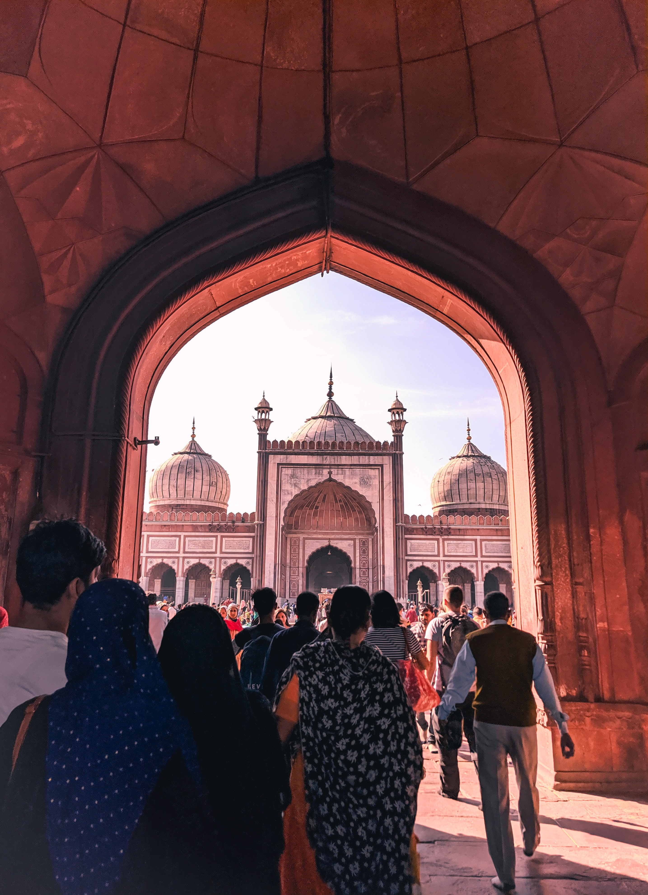
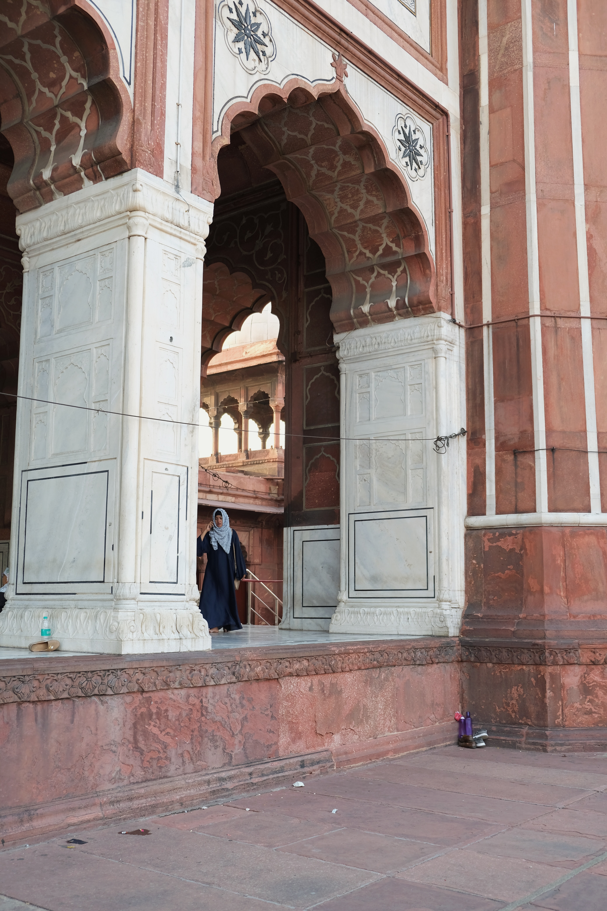
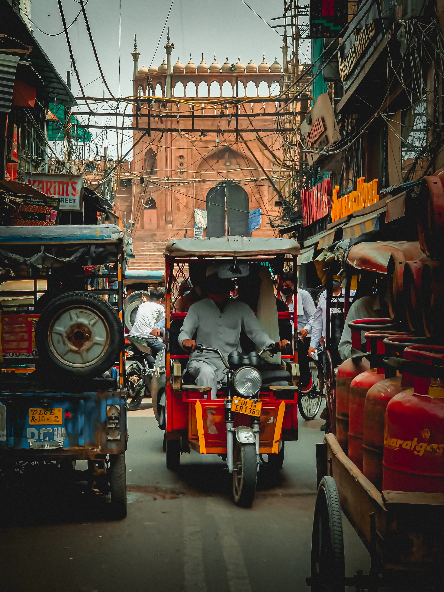

Jama masjid
  
The Masjid-i Jehan-Numa (lit. 'World-reflecting Mosque'), commonly known as the Jama Masjid of Delhi, is one of the largest mosques in India. It was built by the Mughal Emperor Shah Jahan between 1650 and 1656, and inaugurated by its first Imam, Syed Abdul Ghafoor ShahBukhari. Situated in the Mughal capital of Shahjahanabad (today Old Delhi), it served as the imperial mosque of the Mughal emperorsuntil the demise of the empire in 1857. The Jama Masjid was regarded as a symbolic node of Islamic power across India, well into thecolonial era. It was also a site of political significance during several key periods of British rule. It remains in active use, andis one of Delhi's most iconic sites, closely identified with the ethos of Old Delhi. Mughal Emperor Shah Jahan built the Jama Masjid between 1650 and 1656, at the highest point of Shahjahanabad. The mosque was designed by architect Ustad Khalil, and constructed by approximately 5000 workers. The workforce was diverse, consisting of Indians, Arabs, Persians, Turks, and Europeans. The construction was supervised primarily by Sadullah Khan, the wazir (or prime minister) during Shah Jahan's reign, and Fazil Khan, the comptroller of Shah Jahan's household. The cost of the construction at the time was ten lakh (one million) rupees.[10] The mosque was inaugurated on 23 July, 1656 by Syed Abdul Ghafoor Shah Bukhari, from Bukhara, Uzbekistan. He had been invited by Shah Jahan to be the Shahi Imam (Royal Imam) of the mosque. The mosque was one of the last monuments built under Shah Jahan. After its completion, it served as the royal mosque of the emperors until the end of the Mughal period. The khutba was recited by the Mughal emperor during the Friday noon prayer, legitimising his rule. The mosque was hence a symbol of Mughal sovereignty in India, carrying political significance. It was also an important centre of social life for the residents of Shahjahanabad, providing a space transcending class divide for diverse people to interact. On the 14th of April in 2006, there were two explosions which came soon after Friday prayers and occurred in swift succession. It was unclear how the blasts occurred. Among the casualties, one was in serious condition, whereas eight other people sustained minor injuries. Imam Ahmed Bukhari commented, "there is anger among our people but I am appealing to them to maintain calm". The Jama Masjid was built as a part of Shah Jahan's new capital in Delhi, Shahjahanabad. It is considered the best among all mosques built during the Mughal Empire, as it has the best mixture of marble and limestone.[38] At the time of its construction, it was the largest mosque in the Indian subcontinent. Shah Jahan claimed that the mosque was modelled after the Jama Masjid of Fatehpur Sikri, and this is reflected in the design of many exterior features, such as the facade and courtyard. However, the interior of the mosque more closely resembles the Jama Masjid in Agra. The mosque predominantly uses red sandstone, and is set apart from its predecessors by a more extensive usage of white marble. Black marble also features as a decorative element. Arabic and Persian calligraphic pieces are found on various surfaces of the structure, whose content ranges from religious to panegyric.